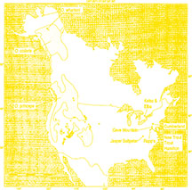

American pikas are believed to have evolved from Siberian ancestors that crossed the former land bridge between Asia and Alaska. They once lived across North America, but have been retreating upslope over the past 12,000 years. American pikas now live on high-elevation cool mountains west of the Rocky Mountains. They can be found in Montana, Wyoming, Colorado, Idaho, Washington, Oregon, California, Nevada, Utah, and New Mexico, as well as western Canada. American pikas are found above the tree line in alpine terrain. They live on rock faces, talus (slopes form by rock debris), and cliffs near mountain meadows. Though most pikas in the lower 48 inhabit alpine ecosystems exclusively, some survive at lower altitudes where deep, cool caves are available, such as the ice tubes in California's Lava Beds National Monument. Weasels, hawks, and coyotes can prey on pikas.
